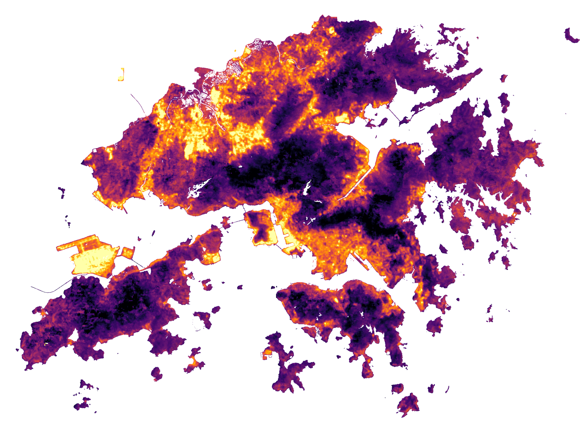
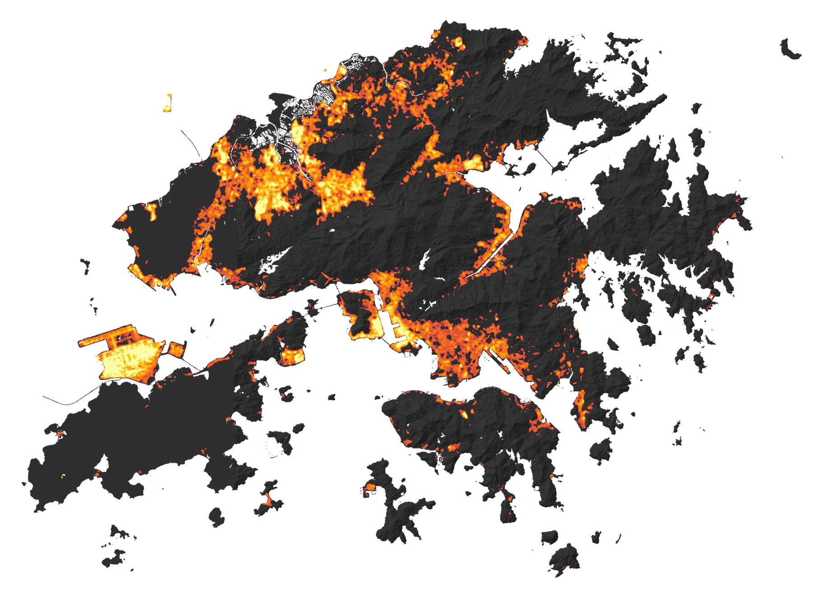
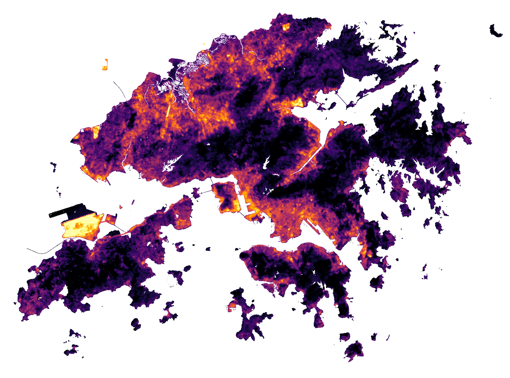
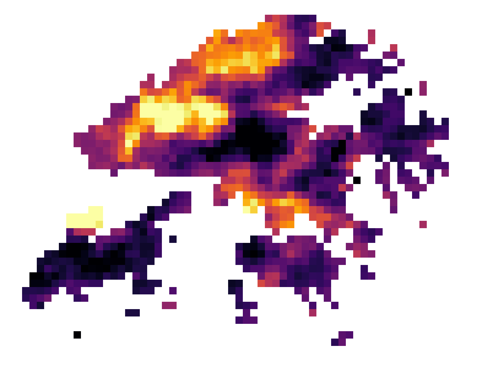
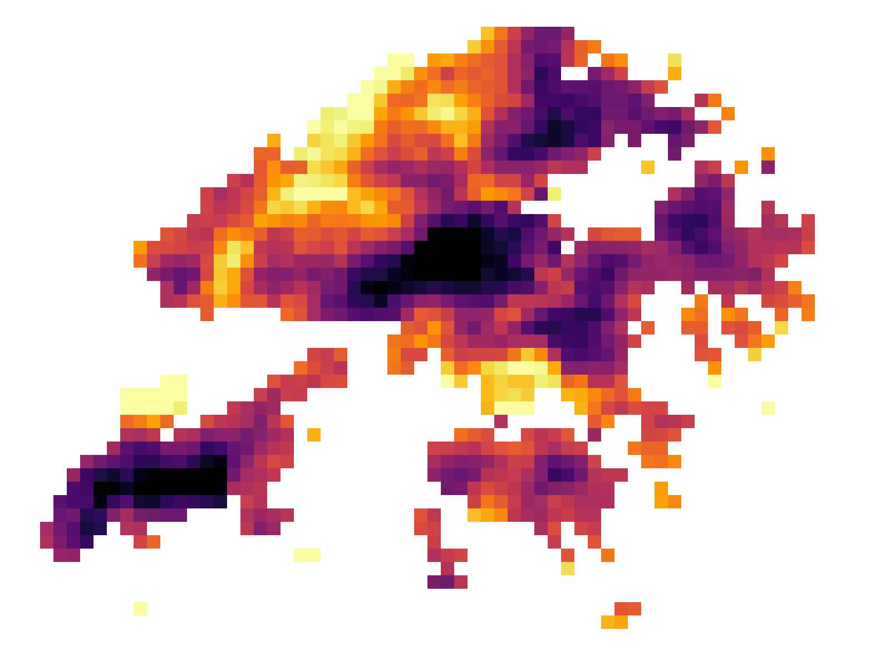
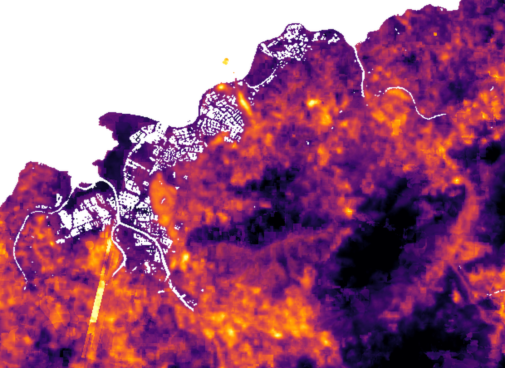
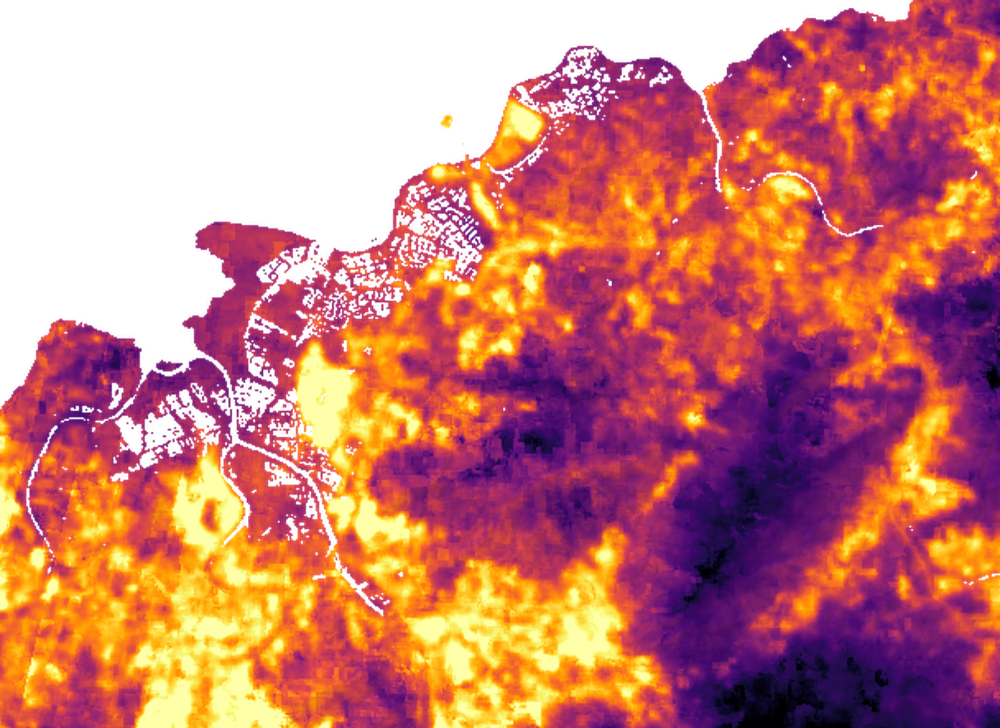

CCST9083 · Earth as Seen by Satellite
Hotter streets,
greener relief?
Hong Kong's urban heat island, read from 705 km up · 2014–2025
Feng Yujie · Meet Kachhadiya · Tony Tse · Song Yixuan · Liu Yangfan · Wong Ching Him

A summer morning, 10:30
0°C
Method
One satellite.
One grid.
Heat, greenery and concrete all come from Landsat 8/9, on the same 30 m pixels, so each pixel can be compared with itself.
Finer land-cover maps (10 m) are averaged up to 30 m.
MODIS (1 km) appears in pictures only, never in the statistics.
Heat · LSTthermal band 10
Green · NDVIred + near-infrared
Concrete · NDBIshortwave + near-infrared
I
The fever
Research question 1
How have the intensity and the reach of Hong Kong's daytime heat island changed between 2014 and 2025?
Summer 2024–25 · thermal portrait
0°C
Lowland forest, same morning

2014–15
2024–25
A decade apart · drag to compare
0°C → 0°C
Heat-island intensity
(urban minus forest)
0 → 0 km²
Hot-spot area
(more than 1 SD above the city mean)
Where the heat grew · 2014–15 → 2024–25
MODIS 1 km · for looking, not for measuring
After sunset, the city keeps its heat

Day · ~10:30 ·

Night · ~22:30 ·
14:00
● satellite pass (MODIS Terra ≈10:00 · 21:30, Aqua ≈14:00 · 02:30), summer 2024, 1 km · the line between passes is interpolated · drag to scrub
II
The shade
Research question 2
How strongly does surface heat follow greenery and concrete, and how much cooler are parks than the streets around them?
Every dot is a 30 m pixel
r =
Heat vs greenness (NDVI)
Eighteen districts · bar width is area
III
The new frontier
Research question 3
Has turning farmland and fishponds into the Northern Metropolis made the ground measurably hotter than land left alone?
Northern Metropolis · 2014–15 → 2024–25
0 km²
turned from green to built
newly built
greened
unchanged


2014–15
2024–25
What the satellite told us
Method, honestly
Avdan & Jovanovska (2016) J. Sensors · Nichol et al. (2009) Atmos. Res. · Oke (1982) QJRMS · Voogt & Oke (2003) RSE · Weng, Lu & Schubring (2004) RSE · Zha, Gao & Ni (2003) IJRS
Data: USGS Landsat C2 L2, ESA WorldCover, Impact Observatory LULC, Copernicus DEM, NASA MODIS via Microsoft Planetary Computer · boundaries and parks © OpenStreetMap contributors
← → to move · F fullscreen